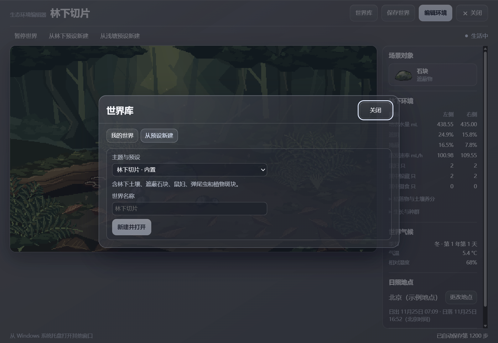

主题与内置预设选择 · 名称空白的提交禁用 · 世界库模式弹窗与页签
打开原始 PNG采集记录
Windows 原生应用 WebView2 客户区 PNG
原图 1590 × 1095 px · 客户区 1060 × 730 CSS px · DPR 1.5
世界刻度 2046 · 光照预览 世界光照 · 运行状态 生活中
右栏滚动偏移 0 CSS px，可见 601 / 总长 639 CSS px。
世界库→从预设新建→主题与预设
本轮在 Windows 应用中采到「主题和预设表单默认态」、「池塘内置预设说明」。可在采集记录核对进入方式、实际动作与方法。
从预设新建→清空世界名称
本轮在 Windows 应用中采到「主题和预设表单默认态」。可在采集记录核对进入方式、实际动作与方法。
默认表单截图显示名称空白和提交禁用。
编辑器→世界库→我的世界／从预设新建
本轮在 Windows 应用中采到「我的世界，初始仅林下」、「主题和预设表单默认态」。可在采集记录核对进入方式、实际动作与方法。